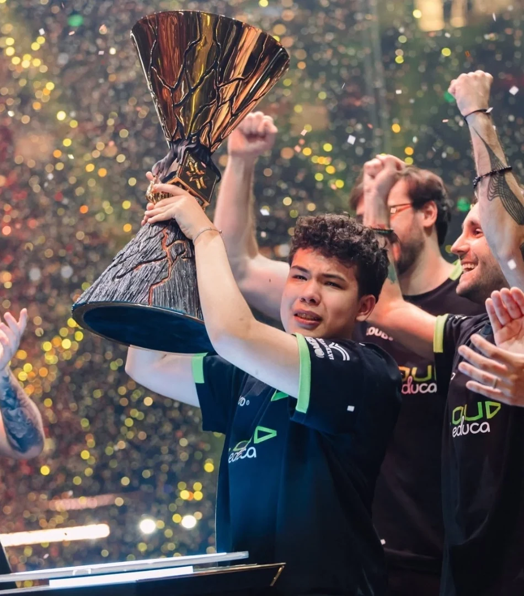

Chile · 18 anos
erde
Roberto Lobos
O capitão que transformou a dor em motivação.
Natural do Chile, erde chegou à LOUD após sua passagem pela Leviatán Academy e rapidamente se tornou uma figura central do elenco. No Champions 2026, conquistou o prêmio de MVP, sendo o jogador mais jovem a receber essa honraria.
Sua conquista, porém, teve um significado pessoal profundo: sua mãe faleceu apenas dois dias antes da estreia da equipe no torneio. Após a vitória, erde se emocionou ao falar sobre a perda. Em entrevistas anteriores, também destacou a importância de seu pai, seus irmãos e amigos em sua trajetória.
Uma vitória que representa não apenas excelência competitiva, mas também uma história de amor, superação e perseverança.